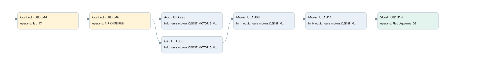

client motor 5
time work motor · 검색 색인 순서 5 · 원본 내부 NID 추정 5
백업 PLF 원본의 2853789 바이트 위치에서 복원한 XML. 검색 문서 1006의 객체 키 161022000412000000000000와 연결했다. 이름 해석 12/12개. 남은 RefId는 상수 또는 미해석 참조다.
연결 구조 다시 그리기
원본 Part/PCon/Wire를 이용한 연결도다. TIA 화면의 래더 배치 또는 실행 결과를 재현한 그림은 아니다. 핀 연결은 아래 표와 원본 XML을 기준으로 읽는다. 노드 위에 마우스를 두면 피연산자 이름을 볼 수 있다.

접점·코일·블록과 피연산자
| Part UID | Gate | Negated 핀 | 연결 피연산자 |
|---|---|---|---|
| 344 | Contact | operand = Tag_47 | |
| 346 | Contact | operand = AIR KNIFE RUN | |
| 298 | Add | in1 = hours motors.CLIENT_MOTOR_5_MIN; in2 = 1; out = hours motors.CLIENT_MOTOR_5_MIN | |
| 305 | Ge | in1 = hours motors.CLIENT_MOTOR_5_MIN; in2 = 60 | |
| 308 | Move | in = 1; out1 = hours motors.CLIENT_MOTOR_5_HOUR | |
| 311 | Move | in = 0; out1 = hours motors.CLIENT_MOTOR_5_MIN | |
| 314 | SCoil | operand = Flag_Aggiorna_DB |
접점 경로를 펼친 조건식
Contact·O/A·비교기의 원본 연결을 읽기 쉽게 펼친 보조 해석이다. POWER는 전원 레일 시작을 뜻한다. 호출 블록·에지·타이머의 내부 동작과 다중 쓰기 순서는 이 표로 실행 검증하지 않았다. 미해석 핀과 RefId는 원문 연결표에서 확인한다.
| UID | 동작 | 대상 | 원본 접점 경로 | 내용 |
|---|---|---|---|---|
| 308 | Move | hours motors.CLIENT_MOTOR_5_HOUR | ((Tag_47 AND AIR KNIFE RUN) AND [hours motors.CLIENT_MOTOR_5_MIN >= 60]) | Move 입력 1 |
| 311 | Move | hours motors.CLIENT_MOTOR_5_MIN | Move UID 308.eno (블록 동작 확인) | Move 입력 0 |
| 314 | SCoil | Flag_Aggiorna_DB | Move UID 311.eno (블록 동작 확인) | 조건 성립 시 Set |
원본 배선 연결
| Wire UID | 동일 Wire 연결 끝점 |
|---|---|
| 348 | Powerrail {} ↔ Part 344.in |
| 327 | ORef 315 (Tag_47) ↔ Part 344.operand |
| 345 | Part 344.out ↔ Part 346.in |
| 328 | ORef 316 (AIR KNIFE RUN) ↔ Part 346.operand |
| 347 | Part 346.out ↔ Part 298.en ↔ Part 305.pre |
| 329 | ORef 317 (hours motors.CLIENT_MOTOR_5_MIN) ↔ Part 298.in1 |
| 330 | ORef 318 (1) ↔ Part 298.in2 |
| 331 | Part 298.out ↔ ORef 319 (hours motors.CLIENT_MOTOR_5_MIN) |
| 332 | ORef 320 (hours motors.CLIENT_MOTOR_5_MIN) ↔ Part 305.in1 |
| 333 | ORef 321 (60) ↔ Part 305.in2 |
| 334 | Part 305.out ↔ Part 308.en |
| 336 | ORef 322 (1) ↔ Part 308.in |
| 338 | Part 308.eno ↔ Part 311.en |
| 337 | Part 308.out1 ↔ ORef 323 (hours motors.CLIENT_MOTOR_5_HOUR) |
| 339 | ORef 324 (0) ↔ Part 311.in |
| 341 | Part 311.eno ↔ Part 314.in |
| 340 | Part 311.out1 ↔ ORef 325 (hours motors.CLIENT_MOTOR_5_MIN) |
| 342 | ORef 326 (Flag_Aggiorna_DB) ↔ Part 314.operand |
식별자 해석 근거 12개
| ORef UID | RefId | 이름 | IdentXmlPart 파일 | 해석 방법 |
|---|---|---|---|---|
| 315 | 1 | Tag_47 | 0613-IdentXmlPart.xml | UID/RID + search-text + NID agreement |
| 316 | 32 | AIR KNIFE RUN | 0613-IdentXmlPart.xml | UID/RID + search-text + NID agreement |
| 317 | 34 | hours motors.CLIENT_MOTOR_5_MIN | 0615-IdentXmlPart.xml | UID/RID + search-text + NID agreement |
| 318 | 7 | 1 | 0616-IdentXmlPart.xml | literal candidate: UID/RID/NID + nearby named declarations + search-text agreement |
| 319 | 34 | hours motors.CLIENT_MOTOR_5_MIN | 0615-IdentXmlPart.xml | UID/RID + search-text + NID agreement |
| 320 | 34 | hours motors.CLIENT_MOTOR_5_MIN | 0615-IdentXmlPart.xml | UID/RID + search-text + NID agreement |
| 321 | 8 | 60 | 0616-IdentXmlPart.xml | literal candidate: UID/RID/NID + nearby named declarations + search-text agreement |
| 322 | 7 | 1 | 0616-IdentXmlPart.xml | literal candidate: UID/RID/NID + nearby named declarations + search-text agreement |
| 323 | 36 | hours motors.CLIENT_MOTOR_5_HOUR | 0615-IdentXmlPart.xml | UID/RID + search-text + NID agreement |
| 324 | 12 | 0 | 0616-IdentXmlPart.xml | literal candidate: UID/RID/NID + nearby named declarations + search-text agreement |
| 325 | 34 | hours motors.CLIENT_MOTOR_5_MIN | 0615-IdentXmlPart.xml | UID/RID + search-text + NID agreement |
| 326 | 13 | Flag_Aggiorna_DB | 0613-IdentXmlPart.xml | UID/RID + search-text + NID agreement |
검색 코드 보조 자료
참조 명칭을 찾기 위한 자료이며 실행 순서나 AND/OR 관계는 위 연결표로 확인한다.
"tag_47" "air knife run" add "hours motors".client_motor_5_min 1 "hours motors".client_motor_5_min 60 move 1 move 0 "flag_aggiorna_db" "hours motors".client_motor_5_hour "hours motors".client_motor_5_min "hours motors".client_motor_5_min